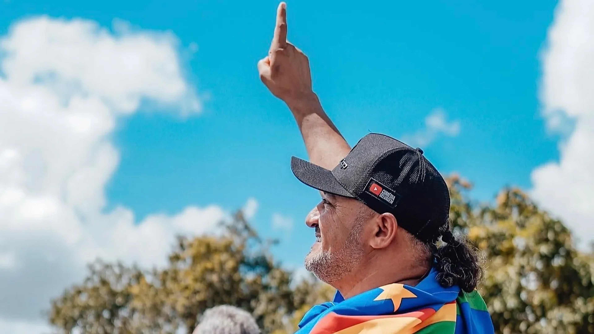
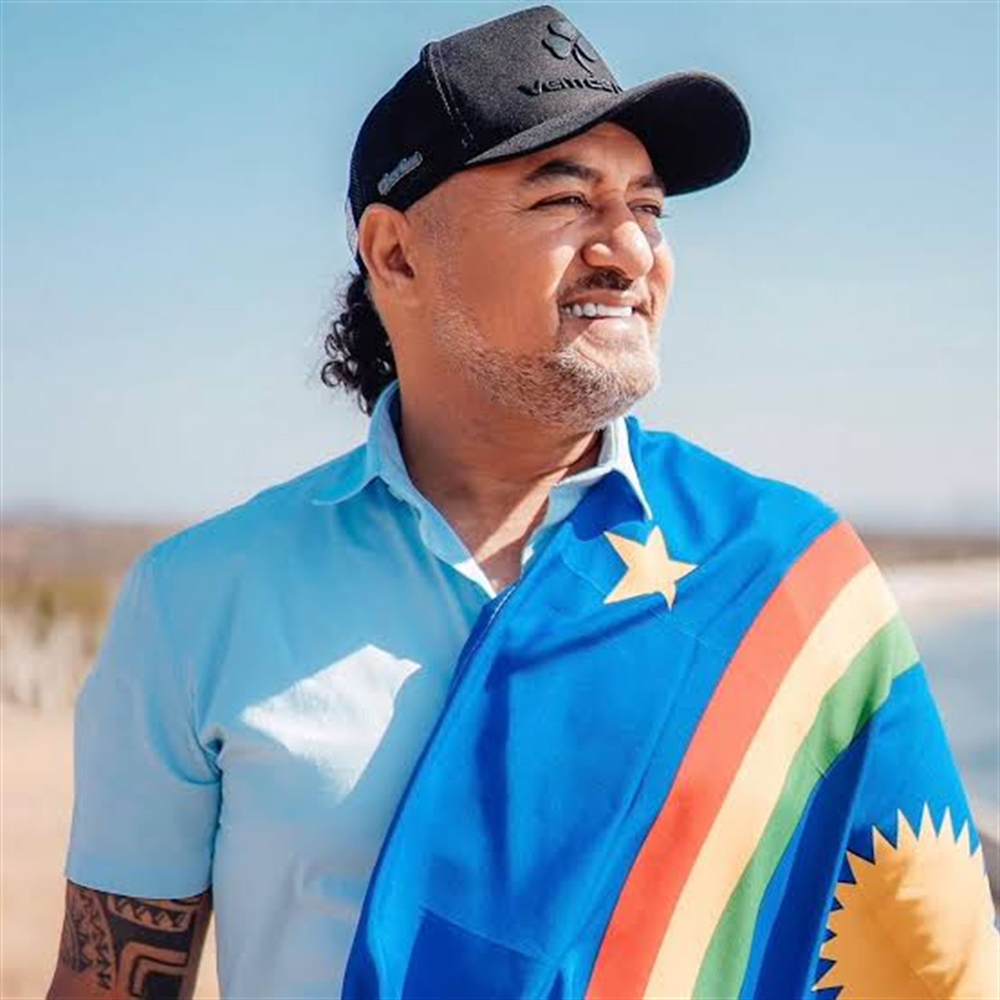
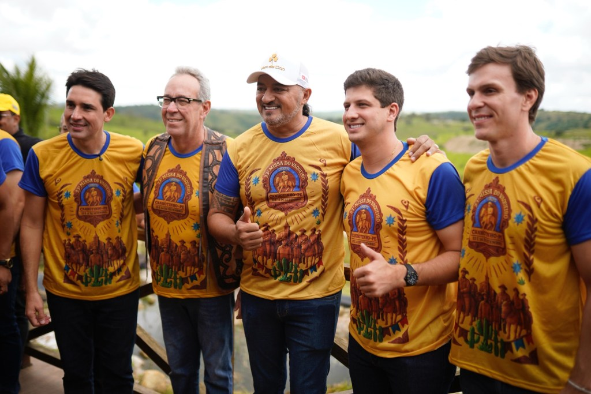
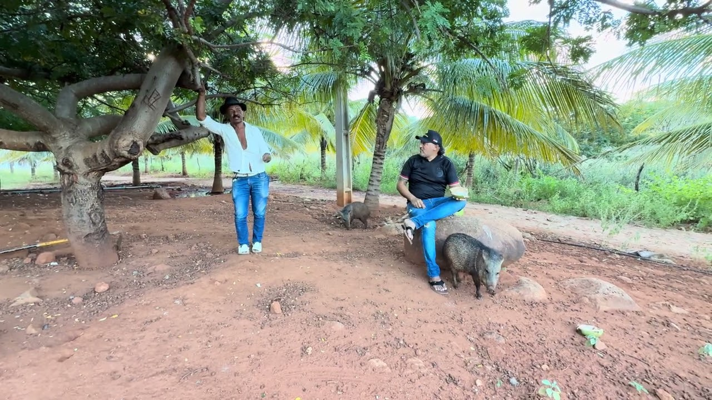
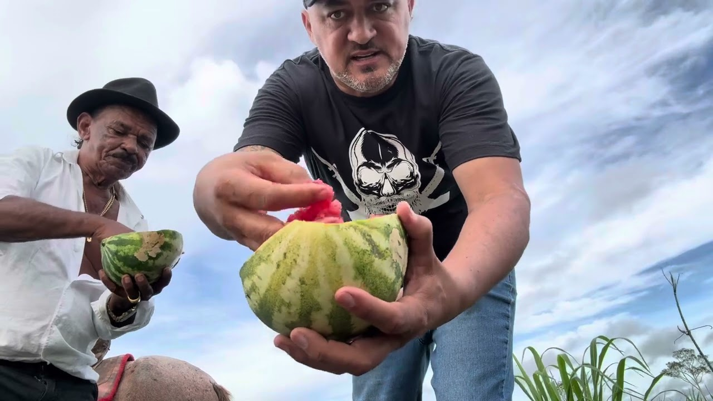
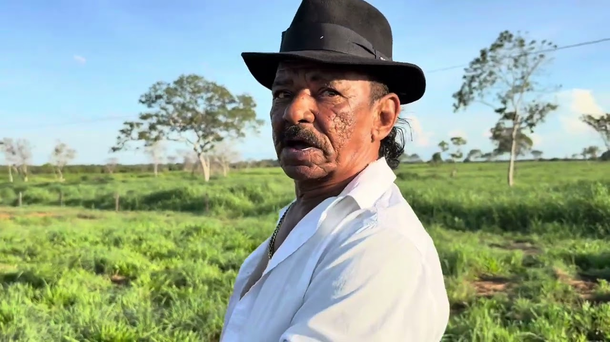
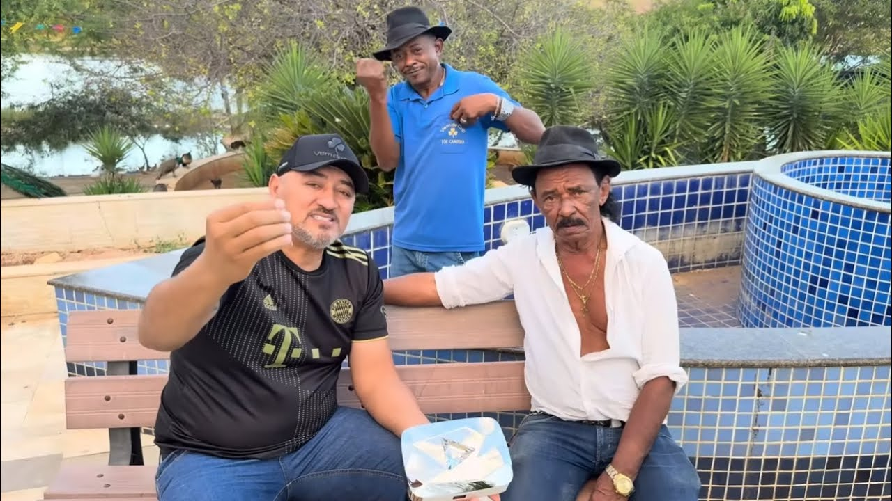
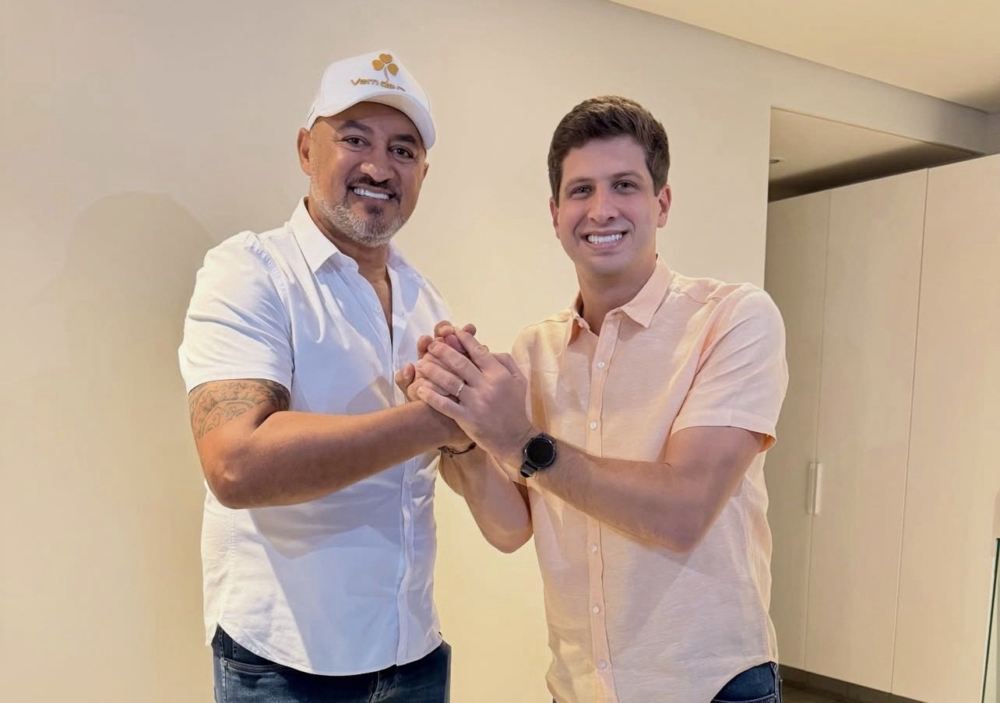

O homem do campo e o pequeno empresário
Pauta voltada para o produtor rural e o pequeno negócio do interior — quem faz o Sertão girar.


Deputado Federal · Pernambuco · Eleições 2026
Charlles de Tiringa é o empresário do Sertão do Pajeú que virou fenômeno na internet — mais de 10 milhões de inscritos. Agora quer levar a voz do interior para a Câmara Federal: a do homem do campo, do pequeno empresário e de quem vive longe do Recife.
4088 na urna · PSB
As urnas abrem em — dias
Quem é Charlles
Nascido em Petrolina, Charlles foi atrás de oportunidades em São Paulo ainda jovem. Voltou para as raízes, fixou residência em Serra Talhada, no coração do Pajeú, e construiu ali a vida que tem hoje: empresário de pecuária e imóveis, e um dos maiores criadores de conteúdo do interior do Nordeste.
Foi na chácara que a história ganhou o país: junto com Tiringa — que começou como caseiro — passou a gravar comédia rural no fim de 2019. Nasceu a Comédia Selvagem: mais de 10 milhões de inscritos, 3 bilhões de visualizações e até participação no The Noite com Danilo Gentili.
A mesma história que fez dele um fenômeno da internet agora quer servir ao povo: “A pauta é voltada para o homem do campo e o pequeno empresário.”

“Quando conheci Charlles Rekson, fiquei impressionado com sua sensibilidade e com a sua vontade de ajudar a transformar a realidade de quem mais precisa.”
Bandeiras
Pauta voltada para o produtor rural e o pequeno negócio do interior — quem faz o Sertão girar.
Fortalecer os municípios do Sertão, do Agreste e da Mata Sul, fora do eixo do Recife.
Candidatura construída de porta em porta: ouvir o povo primeiro, decidir depois.
Princípios inegociáveis: diálogo, transparência e compromisso com quem mais precisa.
Trajetória
Disputou deputado federal sem experiência política e alcançou uma votação expressiva em todo o estado.
Ao lado de Tiringa, em cerimônia articulada com o presidente estadual do partido, Álvaro Porto.
Filia-se ao partido com João Campos e assume a candidatura a deputado federal, número 4088.
Vote 4088 e leve a voz do Sertão para a Câmara Federal.
Na estrada

Ao lado de João Campos, Álvaro Porto e lideranças da Mata Sul.
✓ feitaPalmares, Belém de Maria, Água Preta e Usina Serra Azul, ouvindo lideranças e comunidades.
em andamentoNo coração do Pajeú, onde a candidatura começou e segue firme.
a raizRota do Sertão
Cada carimbo abaixo é um lugar onde a conversa com o povo já começou.
Direto da chácara
Vídeos da Comédia Selvagem e publicações da campanha — a conversa começa aí. Siga, compartilhe e espalhe.

YouTube
YouTube
YouTube
YouTube
InstagramO canal que nasceu na chácara e virou Brasil. Vem com a gente.
→Redes
Siga e ajude a espalhar a mensagem do Sertão.
Eleições 2026
4088
Vote 4088 — Deputado Federal · Pernambuco · PSB
Nossos princípios são inegociáveis.
Apoie a campanha em queroapoiar.com.br/charllesdetiringa